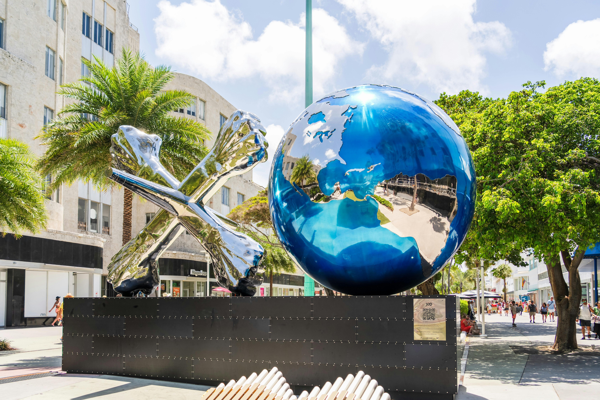
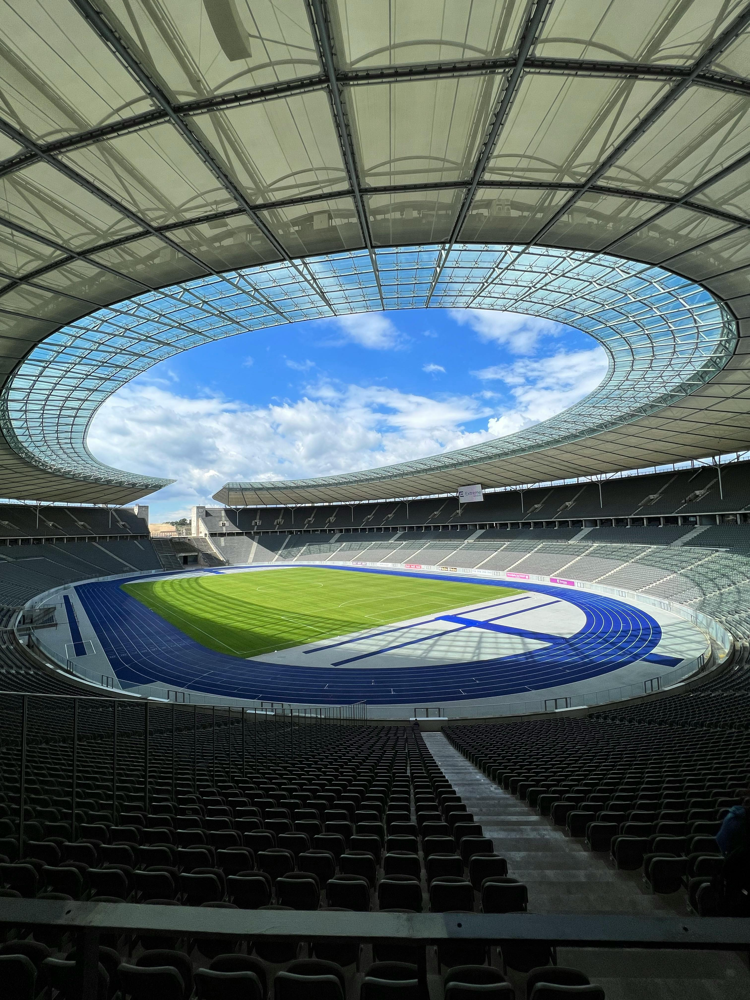
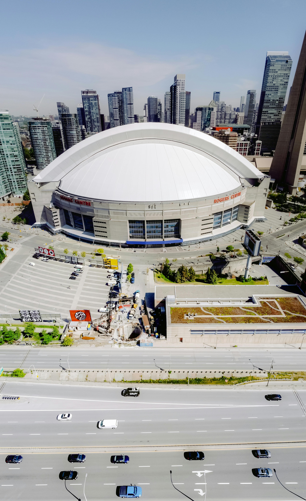
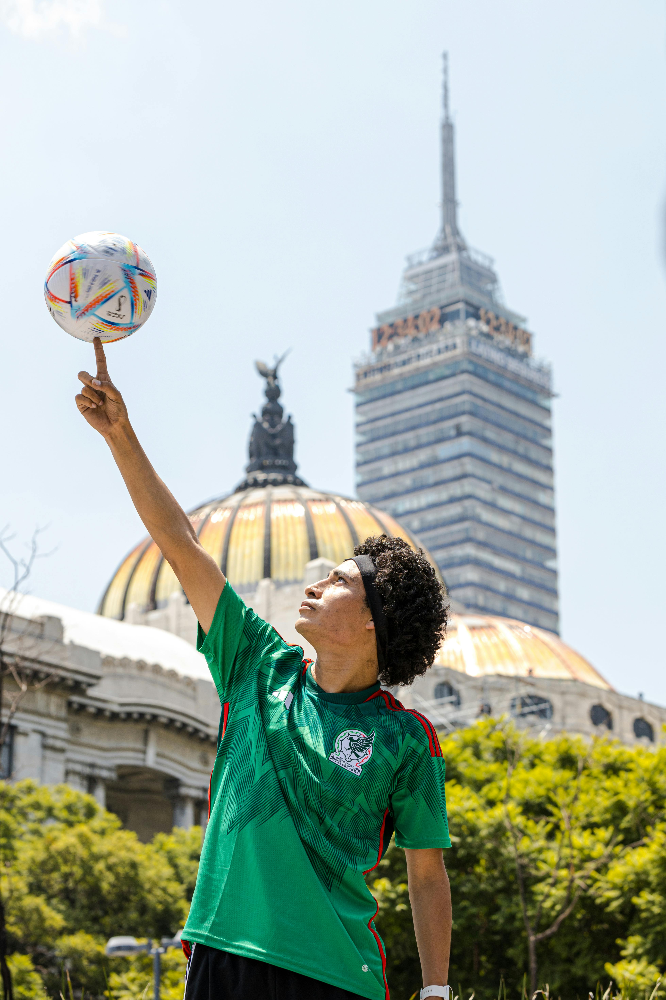

As 16 cidades-sede da Copa 2026
O torneio acontece em cidades incríveis — cada uma com uma personalidade única. Veja as principais e escolha onde você quer estar.

Nova York / Nova Jersey
Sede da final e uma das cidades mais desejadas da Copa. É a escolha de quem quer combinar jogo grande, skyline icônico e uma viagem urbana de peso.
Los Angeles
Clima californiano, indústria do entretenimento e ótima base para quem quer transformar a Copa em road trip pelo oeste americano.

Miami
A favorita de muitos brasileiros: calor, praia, atmosfera latina e uma logística mais intuitiva para quem quer uma primeira experiência de Copa nos EUA.

Dallas
Boa alternativa para quem busca estrutura, estádio impressionante e custos que podem ser mais equilibrados do que NY, LA e Miami.

Toronto
Multicultural, organizada e com cara de grande metrópole internacional. Excelente porta de entrada para quem quer combinar Copa e Canadá na mesma viagem.

Cidade do México
Talvez a sede com atmosfera mais naturalmente futebolística. Cultura vibrante, paixão pelo esporte e uma experiência de Copa muito forte fora e dentro do estádio.
Outras cidades: San Francisco · Seattle · Kansas City · Boston · Philadelphia · Atlanta · Vancouver · Guadalajara · Monterrey


Acompanhe em todas as plataformas
Antes, durante e depois da Copa, você também pode acompanhar vídeos, bastidores, dicas e atualizações do Lipe Travel Show nas redes.